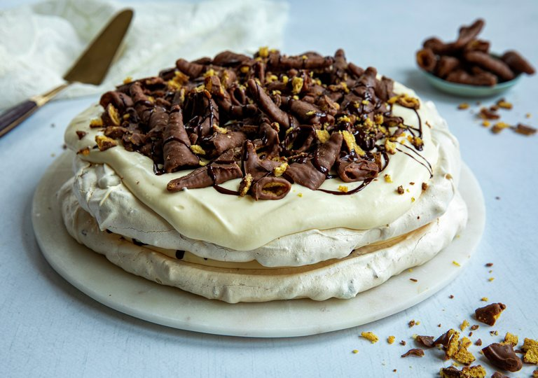

Smashkake

Se på denne!!!
En dobbel Pavlova med Smash! - kaken med den perfekte kombinasjonen av søtt, salt og luftig sprøtt! Her skal det iallefall "godt gjøres å spise bare en!"
- 3 ts maisenna
- 50 g smash
- 1,5 ts hvitvinseddik
- 2 ss sjokoladesaus
- 6 stk. eggeplomme
- 5,5 dl melk
- Lag eggekrem først: Visp sammen eggeplommer, melk, sukker og maisenna i en kjele. Klipp opp gelatinplater og ha dem i kjelen. Varm opp smeten under omrøring til kremen begynner å tykne. Avkjøl kremen til den er helt kald.
- Lag marengsbunner: Ha eggehviter i en ren, tørr bolle av glass eller rustfritt stål. Pisk dem sakte sammen med litt salt til de danner et mykt skum. Skru opp hastigheten til boblene i skummet er små og jevne. Når skummet danner stive topper, tilsett sukker, litt av gangen. Pisk til blandingen er myk og blank og alt sukkeret er oppløst. Ikke visp for lenge, da blir blandingen kornete.
- Vend inn siktet maisenna og eddik med en slikkepott.
- Grovhakk smash, og ha i marengsen. Vend forsiktig rundt et par ganger til.
- Legg ark med bakepapir på to stekebrett, tegn to sirkler etter en kakeform eller en tallerken, 22-24 cm i diameter. Fordel blandingen i sirklene og form det til to kaker, 2-3 cm høye.